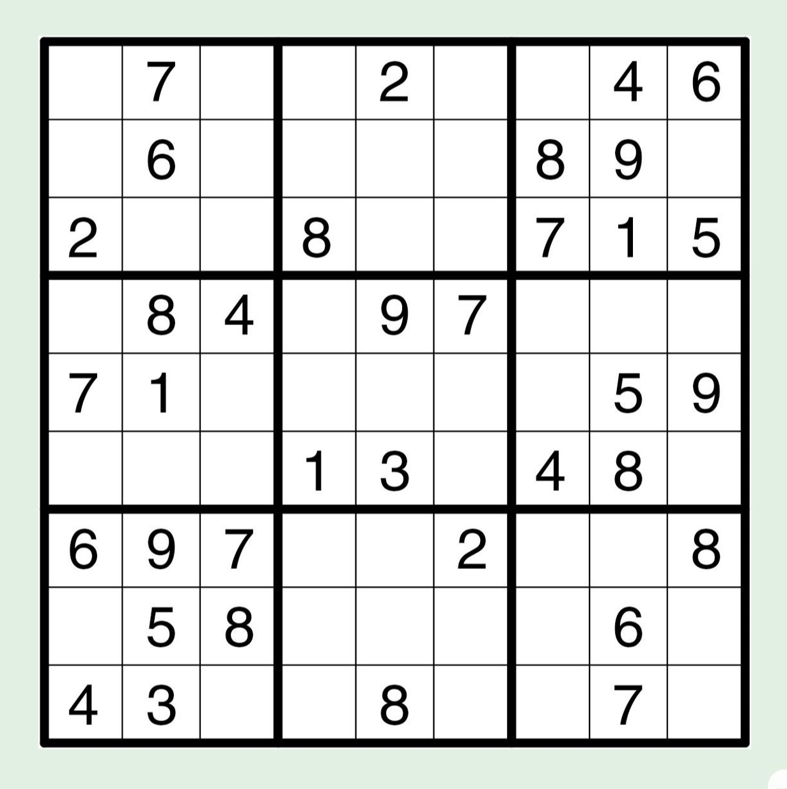

Take a sudoku problem and enter the numbers in the non-empty squares in the
corresponding cell.
Hit Solve!
This web app uses recursion and backtracking to find a solution for your sudoku puzzle.

A sample sudoku question is shown above.
If you have no idea about sudoku. Click here.